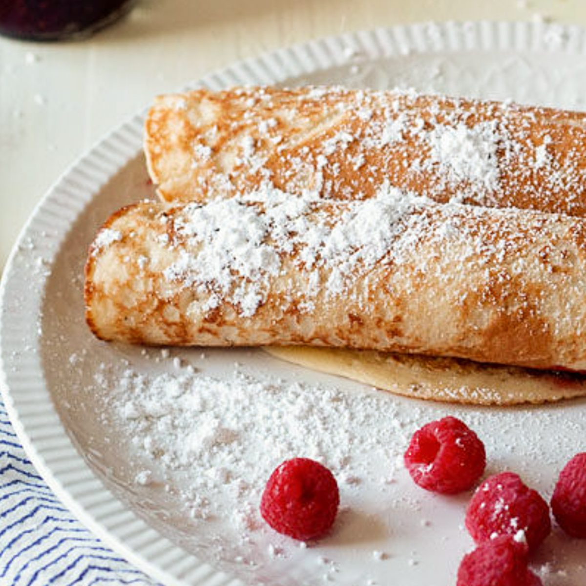
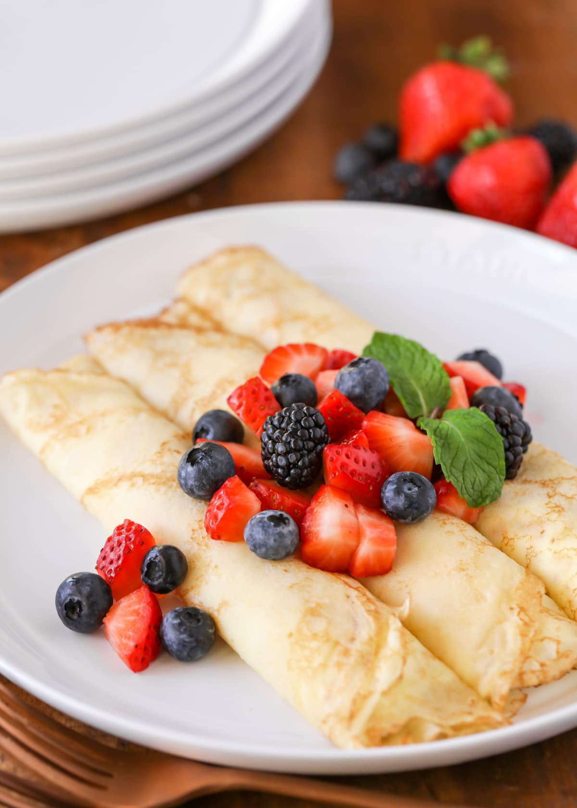
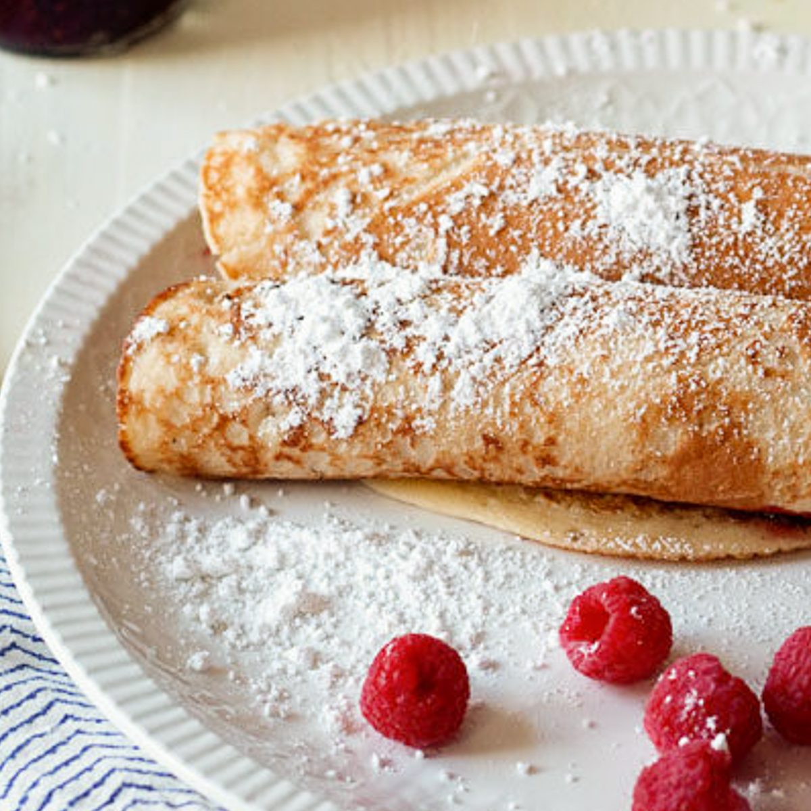
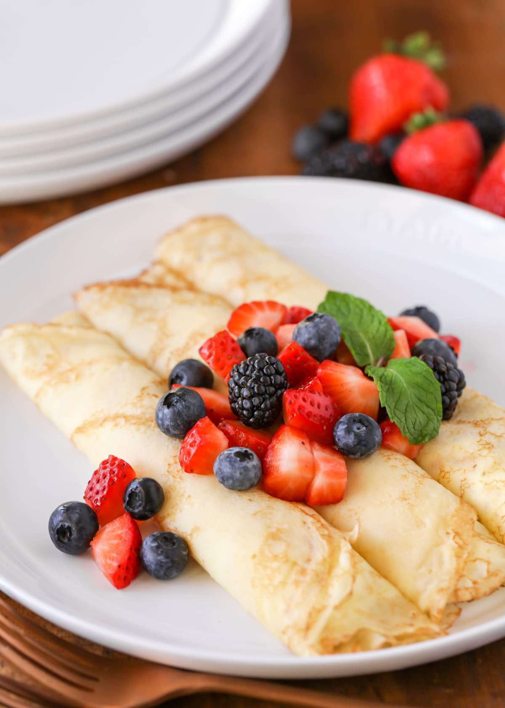

Chinese Jiaozi
Origin
China
Source
Category
Main Dish
Chinese dumplings (Jiaozi, 饺子) are stuffed parcels made of unleavened dough and savory fillings consisting of minced ingredients like meat, egg, tofu, or vegetables. They can be boiled, pan-fried or steamed.
Recipe Ingredients
- pork
- cabbage
- Water
- Flour
Recipe Steps
- Combine filling ingredients in a bowl. Mix thoroughly.
- Divide the dough into small portions.Roll each portion into a thin circle, about 3-4 inches in diameter.
- Place a small amount of filling in the center of each wrapper.
- Moisten the edge of the wrapper with water, fold in half, and pinch edges to seal. Ensure there's no air trapped inside.
- Boil in water until they float to the top and the filling is cooked through.
Additional Food images


Zucchini Fritters
Origin
Unknown
Source
Category
Side dish/main dish

I found this recipe for zucchini fritters on a food blog when I was looking for quick and easy dishes to make during undergrad. It uses minimal ingredients and can be done in less than half an hour. They’re delicious and filling and go great with dipping sauces.
Recipe Ingredients
- Zucchini
- Eggs
- Vegetable/seed oil
- Garlic
- Salt and pepper
- Flour
Recipe Steps
- Combine eggs, salt, and pepper and whisk
- Add pressed garlic
- Grate the zucchini and squeeze the moisture out of it
- Add zucchini and flour and mix
- Heat oil in pan and add dollops of batter
- Serve with or without dipping sauce
Additional Food images


Coca-Cola Chicken Wings
Origin
China
Source
Family Recipe
Category
Main Dish

I learnt how to cook Coca-Cola chicken wings from my mother, and I've since tweaked her recipe to better suit my family's palate, making it less sweet. While the cooking process remains straightforward, the result is incredibly flavorful, and once you've tried it, you'll understand its delicious appeal!
Recipe Ingredients
- Chicken wings
- Scallions
- Ginger slices
- Cooking wine
- Dark soy sauce
- A can of coke
Recipe Steps
- Wash and place chicken wings in a bowl
- Add scallions, ginger slices, cooking wine, dark soy sauce and salt to the washed chicken wings, and mix them well
- Cover the bowl with plastic wrap and marinate the chicken wings for 1 hour
- Put the right amount of oil in the pot, and put the marinated chicken wings into the pot and fry it until golden brown on both sides
- After fry the chicken wings until golden brown on both sides, then pour a can of coke into the pan and bring to a boil
- Continue to cook for an additional 2-3 minutes until the glaze has thickened and coats the wings nicely
- Transfer the Coca-Cola glazed chicken wings to a serving platterb
Additional Food images


Swedish Pancakes
Origin
Kristi
Source
Category
Breakfast

Swedish Pancakes, known as 'Pannkakor' in their homeland, are a delightful twist on the traditional pancake, offering a lighter, crepe-like consistency that's perfect for a sumptuous breakfast or a cozy brunch.Follow along as we whisk through the journey of creating these delightful, golden-brown delicacies that can be rolled, folded, or stacked to your heart's content.
Recipe Ingredients
- Butter
- Sugar
- Eggs
- Vanilla
- Milk
- Water
- Salt
- Flour
Recipe Steps
- Combine all ingredients in a blender and blend until completely smooth.Transfer to the refrigerator to rest for at least 2 hours or up to 2 days.
- Preheat the oven to 200 degrees if you plan to eat the pannkakor right away. Heat a 10 inch nonstick skillet over medium heat.
- Stir the batter briefly to recombine. Brush skillet with melted butter. Pick the skillet up off of the burner and quickly add ¼ cup of batter. Immediately begin swirling the batter around the skillet so that it coats the bottom of the pan. Continue swirling until the batter is just set.
- Return skillet to the burner. Cook until the pancake is golden brown in spots on the bottom, about 30 seconds. Use a thin spatula to loosen the pancake, flip it over continue to cook on the other side for about 30 seconds.
- Transfer to a plate. Cover with foil and transfer to oven to keep warm and repeat with remaining batter, wiping out skillet in between pancakes with paper towel as needed.
- Serve with lingonberry jam and butter (see note below) or other desired toppings and/or fillings. See notes below for more information about making ahead of time and storing in the refrigerator or freezer.
Additional Food images
 



Chicken Curry
Origin
Japan
Source
Family Recipe
Category
Main Dish

Unlike Indian or Thai curry, Japanese curry is more savory than spicy. It’s an exemplary comfort food and one of the most-loved home-cooked dishes in Japan.
Recipe Ingredients
- skinless, boneless chicken breast
- Water
- 1 package curry sauce mix
- 1 can peas
- 5 new potatoes, halved
- 1 package sliced cremini mushrooms
- 2 cups jasmine rice
- 2 medium carrots, chopped
- 1 medium onion, chopped
Recipe Steps
- Place chicken in a large, deep skillet. Drizzle with olive oil and season with salt and pepper on both sides. Add 1/3 cup water to the pan, cover, and cook over medium heat until no longer pink in the center and the juices run clear, about 20 minutes.
- While chicken is cooking, pour 2 cups water into a microwave-safe bowl. Break curry sauce mix into pieces and add to water. Heat in the microwave on high for 3 1/2 minutes; remove and stir until sauce mix has completely dissolved.
- Remove chicken from the skillet. Cut into cubes, return to the skillet, and pour curry sauce over top. Stir in peas, potatoes, mushrooms, carrots, and onion. Bring to a boil, then lower heat and simmer until vegetables are tender, about 30 minutes.
- Meanwhile, bring remaining water and rice to a boil in a saucepan. Reduce heat to medium-low, cover, and simmer until rice is tender and water has been absorbed, 20 to 25 minutes.
- Scoop rice into bowls and serve curry on top.
Additional Food images